Setting up the homepage for your conference
Learn how to set up the homepage for your virtual conference, enabling attendees to find out all the information about your event.#
Please Note: This information is for Admins only!
The Homepage for your Conference is the first page your attendees will see when they log into your event.
It will help attendees to familiarise and get set up themselves before the conference.
They will have the opportunity to read important information about your event and guide them towards bookmarking the sessions they’re interested in.
Skip to:
From your dashboard, go to Conference → Configure → Homepage
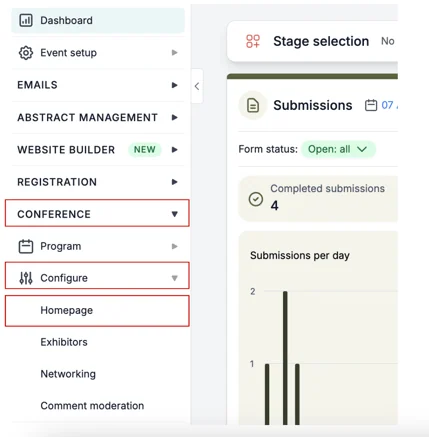
On the next screen, you can edit all information for your homepage.
A preview screen of your homepage automatically updates to the right of your screen when you make any edits.
To start with, the Show conference homepage toggle will be set to off, so you’ll need to click this on (slide to the right) for it to be visible to participants.
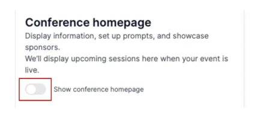
Banner Image
To upload your banner image click on the arrow in the middle of the box to select your image.
Please note the recommended dimensions for your banner image is 900px x 300px.
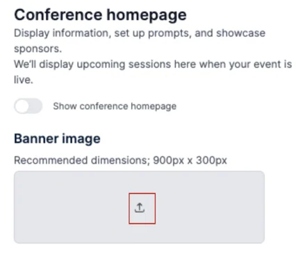
When you have uploaded your image, click on the pencil icon to the right, to either edit your image or delete it.
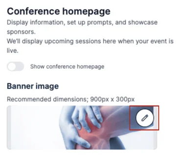
Set Up Tips
Tips are boxes that appear under the banner image on the homepage, allowing you to share helpful instructions with your attendees.
There are tips ready for you to edit, as well as the option to create your own custom tips.
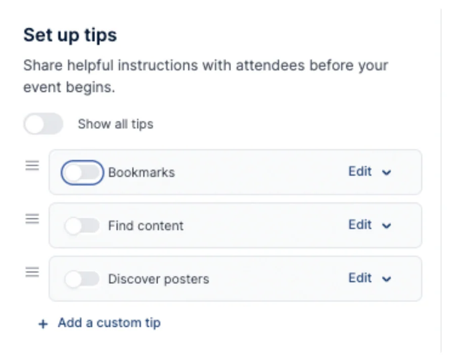
For example:
You may want to create a tip to ask attendees to bookmark their favourite sessions so they have quicker access to those sessions on the day of the event.
As this is a “core tip” you need to click the toggle to On to enable this.
You will see that this now appears to the right on the preview screen.
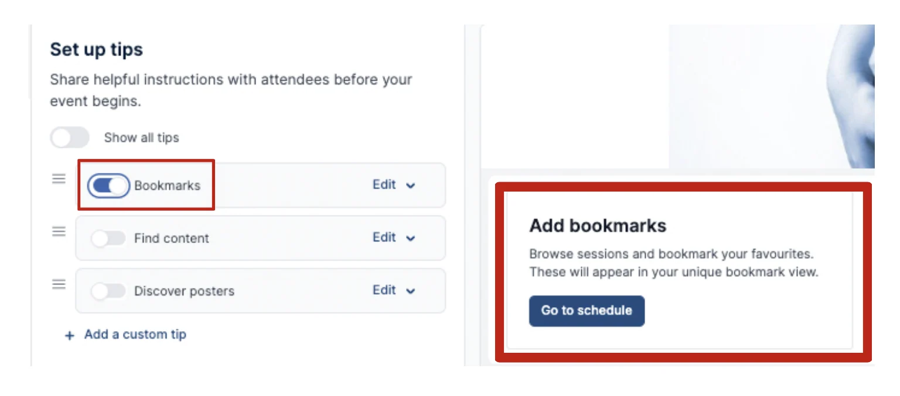
Select Edit on the Bookmark tip to edit the:
- Heading
- Body
- Button Text
- Add a link to where you want the tip to take the attendee (i.e. the bookmark view) (for this tip, this will automatically be added, but if you’re creating a custom tip then you will need to add a link to the page you want this tip to take your attendees too).
When complete select the Save changes button at the bottom of the page.
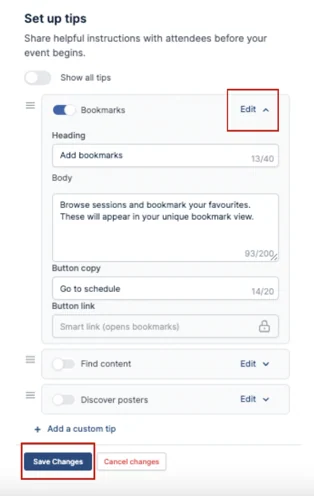
Custom Tip
To add your own custom tip, click on Add Custom Tip and follow the steps above to edit it.
Remember you’ll need to toggle it on for it to be visible and click the Save Changes button when you have completed your amendments.
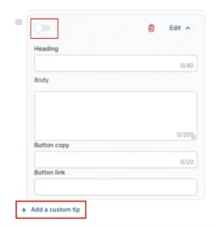
To show all tips click the toggle on for Show All Tips.
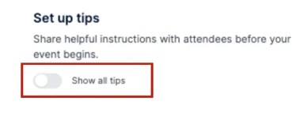
Or if you want a select few to show you can toggle on the individual tip toggles you want visible.
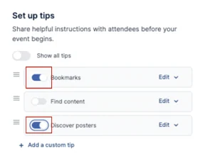
If you would like to delete a tip you have created, you can do so by clicking on the bin icon.
Please note: You cannot delete a core tip.
However, if you do not wish these to be on show, then you can click their toggle to off, and they will no longer be visible.
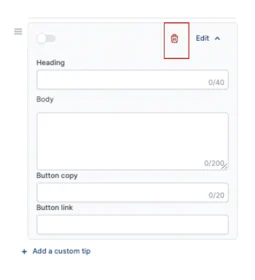
Conference Information
Next, you can add conference information by creating tabs.
You can add multiple ‘tabs’ to display separate information about your conference.
We have labelled the first tab as ‘Event information’ as an example, but this can be changed.
Under the ‘Event Information’ Tab, you need to add the tab name (Event Information), the Heading (i.e. Location Details) & text (both of these boxes can be deleted if required).
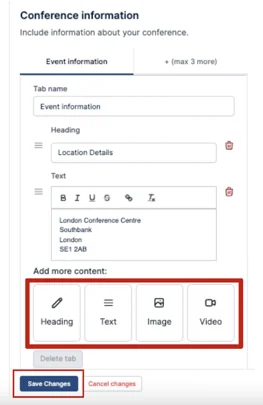
You can add an image and video to the section too by selecting from one of the boxes and uploading your content.
When complete you then click the Save Changes button at the bottom of the page.
Remember you can view what these will look like to the right of the screen.
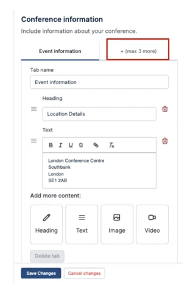
Attach Downloads
Here you can upload any necessary documents for your attendees to access.
To do this click on the upload button, and follow the instructions.
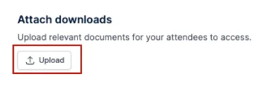
Sponsors
To add your sponsors you can do this through the Program Builder (see how to do this via this Knowledge Base article).
Click on Add Sponsors to do this.
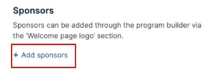
To ensure your sponsor's logo is on the homepage, make sure you add their logo/image to the Welcome page logo section in the program builder.
There are three packages to choose from:
- Bronze, smallest displayed image
- Silver, medium sized displayed image
- Gold, largest displayed image
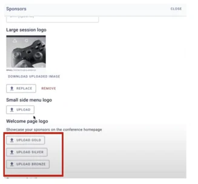
When you go back to your homepage you will see the sponsors image on the preview screen to the right, and on the left, you can tick or untick the box next to the name of the sponsor depending if you want their logo to appear or not.
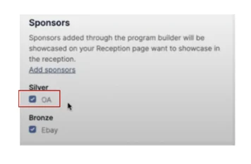
When you are happy with all the information you have added, click on the Save Changes button at the bottom of the page.
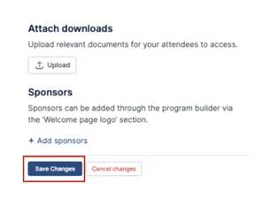
Should you need further assistance, please contact our support team via this Contact Form.
Didn't solve it? Ask our support team
No question is too small, and there's no charge for asking. Raise a ticket and someone who knows the software will pick it up.
Did this page solve it?
Thanks — this helps us fix it.